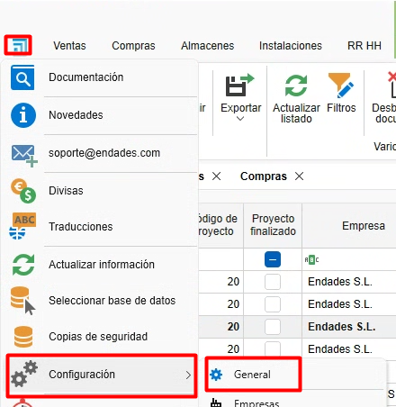
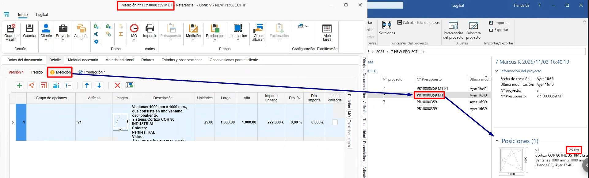
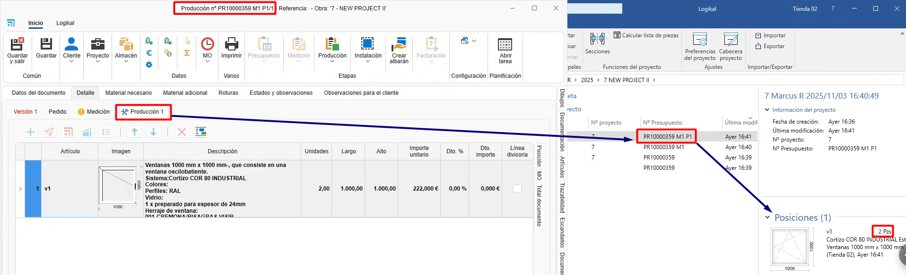

Relationship between phases and project in ENBLAU and Logikal
1. Introduction
Explanation of the relationship between the phases of a project in ENBLAU and Logikal.
2. Working modes in Logikal
In the working mode, you can define how ENBLAU will interact with Logikal when creating new versions, accepting quotations, generating a measurement, or creating a production in ENBLAU.
-
Configure it from the section Settings - General - Logikal.


2.1. Phase mode (default mode)
The phase mode moves the items and quantities of each phase from the ENBLAU document to the project phases in Logikal.
- Create a quotation from ENBLAU:
1. Version 1
- When creating a quotation in ENBLAU, this version will be reflected in Logikal in "Positions (1)" within the same project.

2. Order
- When confirming the order in ENBLAU, an order will be generated and then a phase in Logikal called "Quotation accepted". The items will be moved from the previous phase to the next order phase.

3. Production 1
- From the order in ENBLAU, when creating a production, a new phase will be generated in Logikal called "quotation nº P1". The items and indicated quantities will be moved from the previous phase to the next production phase.

4. Measurement 1
- From the order in ENBLAU, when creating a measurement, a new phase will be generated in Logikal called "quotation nº M1". The items and indicated quantities will be moved from the previous phase to the next measurement phase.

5. Production 2
- From the measurement in ENBLAU, when creating a production (considering the changes in the measurement), a new phase will be generated in Logikal named "quotation nº M1 P2". The items and indicated quantities will be moved from the previous phase to the next production phase.

⚠️ Important! In this mode, items deleted from ENBLAU are permanently removed in Logikal.
2.2. Project mode
The project mode moves the items and quantities of each phase from the ENBLAU document, but a project (same quotation number) is created in Logikal for each ENBLAU phase.
- Create a quotation from ENBLAU:
1. Version 1
- When creating a quotation in ENBLAU, this version will be reflected as a project in Logikal in the phase "Positions (1)".

2. Order
- When confirming the order in ENBLAU, an order will be generated and then a new project in Logikal with the same "quotation nº".

3. Measurement 1
- From the order in ENBLAU, when creating a measurement, a new project will be generated in Logikal with the same number "quotation nº M1" with the items and quantities indicated from the previous phase to the next measurement phase in ENBLAU.

4. Production 1
- From the measurement in ENBLAU, when creating a production (considering the changes in the measurement), a new project will be generated in Logikal with the same number "quotation nº M1 P1" with the items and quantities indicated from the previous phase to the next production phase in ENBLAU.

2.3. Phase mode duplicating items
The phase mode duplicating items copies the items and quantities of each phase from the ENBLAU document to the project phases in Logikal, always keeping a copy in each phase.
- Create a quotation from ENBLAU:
1. Version 1
- When creating a quotation in ENBLAU, this version will be reflected in Logikal in "Positions (1)" within the same project.

2. Order
- When confirming the order in ENBLAU, an order will be generated and then a phase in Logikal named "Quotation accepted". The items will be copied from the previous phase to the next order phase.

3. Measurement 1
- From the order in ENBLAU, when creating a measurement, a new phase will be generated in Logikal named "quotation nº M1". The items and indicated quantities will be copied from the previous phase to the next measurement phase.

4. Production 1
- From the measurement in ENBLAU, when creating a production (considering the changes in the measurement), a new phase will be generated in Logikal named "quotation nº M1 P2". The items and indicated quantities will be copied from the previous phase to the next production phase.

⚠️ Important! In this mode, items deleted in ENBLAU are permanently removed in Logikal.
3. Logikal project creation
When creating a quotation in ENBLAU and then adding a Logikal item, it will be linked to a project in Logikal or, if not available, a new one will be created.


 Español
Español
 English
English
 Italiano
Italiano
 Português
Português